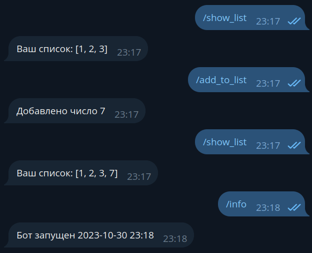

Aiogram bilan tanishish¶
Foydalanilayotgan aiogram versiyasi: 3.7.0
Ba'zi tafsilotlar ataylab soddalashtirilgan!
Ushbu kitob muallifi, nazariyadan tashqari amaliyot ham bo'lishi kerak deb hisoblaydi. Keyingi keltirilgan kodni maksimal darajada sodda qilib qayta yaratish uchun, faqat mahalliy rivojlantirish va o'qitishga mos keladigan yondashuvlardan foydalanishga to'g'ri keldi.
Shunday qilib, masalan, barcha yoki deyarli barcha bo'limlarda bot tokeni dastur kodida ko'rsatiladi. Bu yomon yondashuv, chunki agar kodni ommaviy repozitoriyga (masalan, GitHub) yuklashdan oldin uni o'chirishni unutib qo'ysangiz, tokenning oshkor bo'lishiga olib kelishi mumkin.
Yoki ba'zida ma'lumotlar ombori sifatida faqat operativ xotirada joylashgan tuzilmalar (lug'atlar, ro'yxatlar ...) ishlatiladi. Aslida bunday qilish to'g'ri hisoblanmaydi, chunki bot to'xtatilganda ma'lumotlar tiklanmaydi va yo'qolishiga olib keladi.
Shuningdek, Telegramdan yangilanishlarni olish mexanizmi sifatida polling tanlangan, chunki u deyarli barcha muhitlarda ishonchli ishlaydi va deyarli barcha ishlab chiquvchilarga mos keladi.
Muhim esda tuting, muallifning maqsadi aiogram yordamida aynan Telegram Bot API bilan ishlashni tushuntirish, va umuman olganda butun kompyuter fanlarini tushuntirish emas.
Terminologiya¶
Bir xil terminlardan foydalanish uchun ularni kelishib olamiz va bu keyinchalik chalkashishning oldini oladi:
- Shaxsiy — shaxsiy xabarlar, bot holatida bu foydalanuvchi bilan botning birga-yakka muloqoti, guruh/kanal emas.
- Chat — shaxsiy, guruhlar, superguruhlar va kanallarning umumiy nomi.
- Update — ushbu ro'yxatdagi har qanday hodisa: xabar, xabarni tahrirlash, callback, inline-so'rov, to'lov, botni guruhga qo'shish va h.k.
- Handler — dispatcherdan/routerdan navbatdagi update-ni qabul qilib, uni qayta ishlaydigan asinxron funksiya.
- Dispatcher — Telegramdan yangilanishlarni qabul qilish va keyingi qayta ishlash uchun mos handlerga uzatish bilan shug'ullanadigan ob'ekt.
- Router — dispatcherga o'xshash, lekin handlerlar to'plamining kichik to'plamiga javob beradi. Dispatcherni asos router deb atash mumkin.
- Filter — odatda True yoki False qaytaradigan va handler chaqirilishi yoki chaqirilmasligiga ta'sir qiladigan ifoda.
- Middleware — updatelardan kelgan ma'lumotlarni qabul qilish va handlerga yetmasdan qayta ishlash uchun qo'shiladigan 'qatlam'.
O'rnatish¶
Avvalo bot uchun papka ochamiz, u yerda virtual environment (venv)'ni yaratamiz va aiogram kutubxonasini o‘rnatamiz. Python 3.9 versiyasi o‘rnatilganligini tekshiramiz (agar sizda 3.9 va undan yuqori versiya o‘rnatilgan bo'lsa, ushbu bo‘limni o‘tkazib yuborishingiz mumkin):
[groosha@main lesson_01]$ python3.9
Python 3.9.9 (main, Jan 11 2022, 16:35:07)
[GCC 11.1.0] on linux
Type "help", "copyright", "credits" or "license" for more information.
>>> exit()
[groosha@main lesson_01]$
Endi requirements.txt faylini yaratamiz, unda biz foydalanadigan aiogram versiyasini ko'rsatamiz.
Shuningdek, konfiguratsiya fayllari uchun pydantic-settings kutubxonasi ham kerak bo'ladi.
Aiogram versiyalari haqida
Ushbu bo'limda aiogram 3.x ishlatiladi, ishni boshlashdan oldin kutubxonaning yangiliklar kanaliga kirib, yangi versiyaning mavjudligini tekshirishni tavsiya qilaman. 3 raqami bilan boshlanadigan har qanday yangi versiya bilan ishlashinggiz mumkin, chunki aiogram 2.x versiyasi yangilanmaydi va eskirgan deb hisoblanadi.
[groosha@main 01_quickstart]$ python3.11 -m venv venv
[groosha@main 01_quickstart]$ echo "aiogram<4.0" > requirements.txt
[groosha@main 01_quickstart]$ echo "pydantic-settings" >> requirements.txt
[groosha@main 01_quickstart]$ source venv/bin/activate
(venv) [groosha@main 01_quickstart]$ pip install -r requirements.txt
# ...bu yerda o'rnatish haqida ko'plab yozuvlar chiqadi...
Successfully installed ...shunga o'xshash...
[groosha@main 01_quickstart]$
Обратите внимание на префикс "venv" в терминале. Он указывает, что мы находимся в виртуальном окружении с именем "venv".
Проверим, что внутри venv вызов команды python указывает на всё тот же Python 3.11:
Terminaldagi "venv" boshmatniga e'tibor bering. Bu bizning "venv" deb nomlangan virtual muhit ichida ekanligimizni bildiradi. Keling, venv ichida "python" buyrug'iga yozib uning ishga tushishini tekshirib ko'ramiz:
(venv) [groosha@main 01_quickstart]$ python
Python 3.11.9 (main, Jan 11 2024, 16:35:07)
[GCC 11.1.0] on linux
Type "help", "copyright", "credits" or "license" for more information.
>>> exit()
(venv) [groosha@main 01_quickstart]$ deactivate
[groosha@main 01_quickstart]$
Muhit bizga xalaqit bermasligi uchun deactivate buyrug'ini bilan venv'dan chiqishimiz mumkin.
Agar siz botlarni yozish uchun PyCharm'dan foydalanayotgan bo'lsangiz, Telegram ob'ektlarida kodni avtomatik to‘ldirishni qo‘llash uchun Pydantic'ning uchinchi tomon plaginini o'rnatishni ham tavsiya qilaman.
Birinchi bot¶
Keling, aiogram asosiy shabloniga ega bot.py faylini yarataylik:
import asyncio
import logging
from aiogram import Bot, Dispatcher, types
from aiogram.filters.command import Command
# Muhim xabarlarni o'tkazib yubormaslik uchun loglashni yoqamiz
logging.basicConfig(level=logging.INFO)
# Bot obyektini yaratamiz
bot = Bot(token="12345678:AaBbCcDdEeFfGgHh")
# Dispatcher obyektini yaratamiz
dp = Dispatcher()
# /start buyrug'iga uchun handler
@dp.message(Command("start"))
async def cmd_start(message: types.Message):
await message.answer("Hello!")
# Yangi update'larni olish uchun polling jarayonini boshlaymiz
async def main():
await dp.start_polling(bot)
if __name__ == "__main__":
asyncio.run(main())
Birinchi navbatda e'tibor qaratishingiz kerak bo'lgan narsa: aiogram asinxron kutubxona hisoblanadi, shuning uchun handlerlaringiz ham asinxron bo'lishi kerak. API metodlarini chaqirishdan oldin await kalit so'zini qo'yish kerak, chunki bu chaqiriqlar korutinlarni qaytaradi.
Python’da asinxron dasturlash
Rasmiy hujjatlarni e'tiborsiz qoldirmang! Python saytida ajoyib asyncio qo'llanmasi mavjud.
Agar siz ilgari Telegram uchun boshqa biror boshqa kutubxona, masalan pyTelegramBotAPI bilan ishlagan bo'lsangiz, handler'larni tushuningizda qiyinlik tug'ilmaydi. Farqi shundaki, aiogramda handlerlarni dispatcher boshqaradi. Dispatcher funksiya-handlerlarni ro'yxatdan o'tkazadi va ularni chaqiruvchi hodisalar ro'yxatini filtrlardan foydalanib qo'shimcha cheklaydi. Telegramdan navbatdagi yangilanish (update) qabul qilingandan so'ng, dispatcher barcha filtrlar bo'yicha mos keladigan kerakli qayta ishlash funksiyasini tanlaydi. Agar ikki funksiya mantiqiy jihatdan bir xil filtrlarga ega bo'lsa, avvalroq ro'yxatdan o'tkazilgan funksiya chaqiriladi.
Funksiyani xabarlarni qayta ishlovchi sifatida ro'yxatdan o'tkazish uchun quyidagi ikki amaldan birini bajarish kerak:
1. Uni yuqoridagi misoldagi kabi dekorator bilan yozish.
Turli xil dekoratorlar bilan keyinchalik tanishamiz.
2. Dispatcher yoki routerda ro'yxatdan o'tkazish(register) metodini to'g'ridan-to'g'ri chaqirish.
Quyidagi kodni ko'rib chiqamiz:
# /test1 buyrug'iga uchun handler
@dp.message(Command("test1"))
async def cmd_test1(message: types.Message):
await message.reply("Test 1")
# /test2 buyrug'iga uchun handler
async def cmd_test2(message: types.Message):
await message.reply("Test 2")
Keling, botning ushbu kodini ishga tushiramiz:

cmd_test2 handleri ishlamaydi, chunki dispatcher undan xabardor emas.
Bu xatoni to'g'rilaymiz va funksiyani alohida ro'yxatdan o'tkazamiz:
# Хэндлер на команду /test2
async def cmd_test2(message: types.Message):
await message.reply("Test 2")
# Где-то в другом месте, например, в функции main():
dp.message.register(cmd_test2, Command("test2"))
Botni yangidan ishga tushiramiz:

Sintaktik shakar (syntactic sugar)¶
Kodni toza va o'qilishi osonroq qilish uchun aiogram Telegramning standart obyektlarining imkoniyatlarini kengaytiradi.
Masalan, bot.send_message(...) o'rniga message.answer(...) yoki message.reply(...) deb yozish mumkin.
Oxirgi ikki holatda chat_idni ko'rsatish shart emas, chunki u dastlabki xabardagi kabi bo'ladi.
answer va reply orasidagi farq oddiy: birinchi metod shunchaki xabarni shu chatga yuboradi,
ikkinchisi esa messagedan xabariga "javob" qiladi (bu holatda bot jo'natgan habar sizning habaringgizga bog'langan bo'ladi):
@dp.message(Command("answer"))
async def cmd_answer(message: types.Message):
await message.answer("Bu oddiy xabar")
@dp.message(Command("reply"))
async def cmd_reply(message: types.Message):
await message.reply('Bu "javob" xabari')

Bundan tashqari, xabarlarning ko'p turlari uchun "answer_{type}" yoki "reply_{type}" shaklidagi yordamchi metodlar mavjud, masalan:
@dp.message(Command("dice"))
async def cmd_dice(message: types.Message):
await message.answer_dice(emoji="🎲")
message: types.Message qanday ma'noni bildiradi?
Python kuchli dinamik tiplashgan interpretatsiyalanuvchi til bo'lib,
C++ yoki Java kabi ichki tip tekshiruvi mavjud emas. Biroq, 3.5-versiyasidan boshlab,
tilga tip ko'rsatmalarini qo'llab-quvvatlash qo'shildi, bu esa turli tekshiruvlar va PyCharm kabi IDE’lar ishlatilayotgan
qiymatlarning turlarini tahlil qilib, dasturchiga noto'g'ri narsa uzatilsa xabar berish imkonini beradi.
Bu holatda types.Message matni PyCharm'ga message o'zgaruvchisi aiogram kutubxonasining types modulida tavsiflangan
Message turiga ega ekanligini bildiradi (kodingiz boshidagi importlarga qarang).
Bu orqali IDE atributlar va funksiyalarni ko'rsatib turishi mumkin.
/dice buyrug'i yuborilganda, bot shu chatga o'yin kubigini yuboradi. Albatta, agar uni boshqa chatga yuborish kerak bo'lsa,
odatdagidek await bot.send_dice(...)ni chaqirishga to'g'ri keladi. Lekin bot obyekti (Bot sinfining nusxasi) ma'lum bir
funksiyaning ko'rinishida mavjud bo'lmasligi mumkin. aiogram 3.x da yangilanish kelganda kutubxona bot obyekti aniq bo'lmagan holda
handlerga uzatiladi va uni bot argumenti sifatida olish mumkin. Faraz qilaylik, siz /dice buyrug'i bilan kubikni shu
chatga emas, balki ID -100123456789 bo'lgan kanalga yubormoqchisiz. Oldingi funksiyani quyidagicha qayta yozamiz:
# import qilishni unutmang
from aiogram.enums.dice_emoji import DiceEmoji
@dp.message(Command("dice"))
async def cmd_dice(message: types.Message, bot: Bot):
await bot.send_dice(-100123456789, emoji=DiceEmoji.DICE)
Qo'shimcha parametrlarni uzatish¶
Ba'zida botni ishga tushirganda bir yoki bir nechta qo'shimcha qiymatlarni uzatish kerak bo'lishi mumkin. Bu qandaydir o'zgaruvchi, konfiguratsiya obyekti, biror narsalar ro'yxati va boshqa narsalar bo'lishi mumkin. Buning uchun bu ma'lumotlarni (kwargs) argumentlar sifatida dispatcherga uzatish yoki lug'at bilan ishlayotgandek qiymatlarni belgilash kifoya.
Bunday imkoniyat yagona nusxada bo'lishi va bot ishlayotgan paytda o'zgarmasligi kerak bo'lgan obyektlarni uzatish uchun eng mos keladi (ya'ni, faqat o'qish uchun). Agar qiymat vaqt o'tishi bilan o'zgarishi kerak bo'lsa, bu faqat o'zgaruvchan obyektlar bilan ishlaydi. Handlerlarda qiymatlarni olish uchun ularni oddiygina argumentlar sifatida ko'rsating. Misol orqali ko'rib chiqamiz:
# Boshqa joyda
# Masalan, ilovaning kirish nuqtasida
from datetime import datetime
# bot = ...
dp = Dispatcher()
dp["started_at"] = datetime.now().strftime("%Y-%m-%d %H:%M")
await dp.start_polling(bot, mylist=[1, 2, 3])
@dp.message(Command("add_to_list"))
async def cmd_add_to_list(message: types.Message, mylist: list[int]):
mylist.append(7)
await message.answer("7 raqa qo'shildi")
@dp.message(Command("show_list"))
async def cmd_show_list(message: types.Message, mylist: list[int]):
await message.answer(f"Sizning ro'yxatinggiz: {mylist}")
@dp.message(Command("info"))
async def cmd_info(message: types.Message, started_at: str):
await message.answer(f"Bot ishga tushirildi {started_at}")
Endi started_at o'zgaruvchisi va mylist ro'yxatini turli handlerlarda o'qish va yozish mumkin. Agar har bir yangilanish uchun noyob qiymatlarni (masalan, DBMS sessiya obyektini) uzatishingiz kerak bo'lsa, middlewarelar bilan tanishing.

Konfiguratsiya fayllari¶
Tokenni to'g'ridan-to'g'ri kodda saqlamaslik uchun (agar siz botingizni ommaviy repozitoriyga yuklamoqchi bo'lsangiz?)
bunday ma'lumotlarni alohida konfiguratsiya fayliga chiqarishingiz mumkin. Bu haqida rus tilidagi maqola majud,
Kod yozayotganinggizda environment o'zgaruvchilarini o'zgartirishnggiz kifoya, ammo ushbu kitob doirasida biz .env fayllaridan foydalanamiz,
bu kodlarimizni biroz soddalashtiradi va bu kitob foydalanuvchilariga loyihani ko'rsatishda yordam beradi.
Shunday qilib, bot.py yonida quyidagi ko'rinishdagi config_reader.py nomli alohida fayl yaratamiz:
from pydantic_settings import BaseSettings, SettingsConfigDict
from pydantic import SecretStr
class Settings(BaseSettings):
# Maxfiy ma'lumotlar uchun, masalan, bot tokeni uchun
# str o'rniga SecretStr ishlatish tavsiya etiladi
bot_token: SecretStr
# Pydanticning ikkinchi versiyasidan boshlab, sozlamalar klassining sozlamalari
# model_config orqali belgilanadi
# Bu holda UTF-8 kodlash bilan o'qiladigan .env fayli ishlatiladi
model_config = SettingsConfigDict(env_file='.env', env_file_encoding='utf-8')
# Fayl import qilinganda darhol
# konfiguratsiya obyekti yaratiladi va tasdiqlanadi,
# keyinchalik uni turli joylardan import qilish mumkin
config = Settings()
Endi bot.py faylimizni biroz tahrir qilamiz:
# import
from config_reader import config
# Secret* turi bo'lgan yozuvlar uchun
# haqiqiy mazmunni olish uchun get_secret_value() metodini chaqirish kerak,
# aks holda '*******' ko'rsatiladi
bot = Bot(token=config.bot_token.get_secret_value())
Oxirida, .env (boshida nuqta bilan) faylini yaratamiz va unda bot tokenini yozamiz:
BOT_TOKEN = 0000000000:AaBbCcDdEeFfGgHhIiJjKkLlMmNn
Agar hammasi to'g'ri qilingan bo'lsa, python-dotenv .env faylidagi o'zgaruvchilarni yuklaydi, pydantic
ularni tasdiqlaydi va bot obyekti kerakli token bilan muvaffaqiyatli yaratiladi.
Shu bilan biz kutubxona bilan tanishishni yakunlaymiz, keyingi bo'limlarda aiogram va Telegram Bot API ning boshqa "foydali funksiyalar"ini ko'rib chiqamiz.